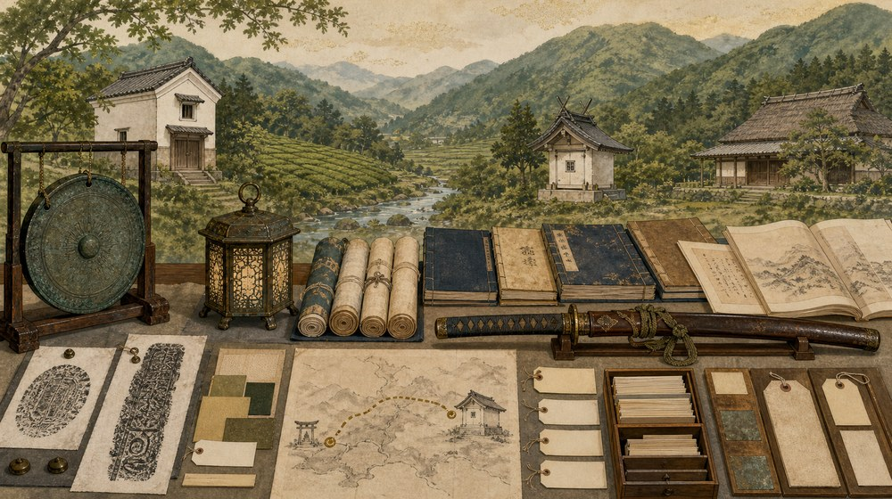
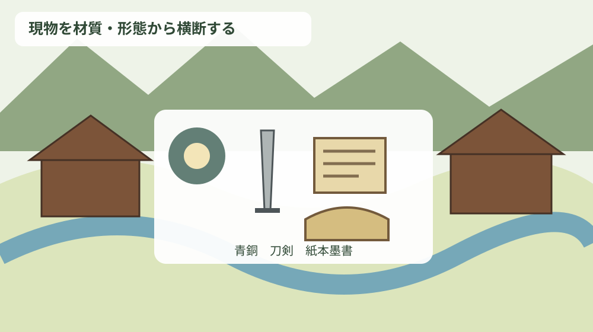
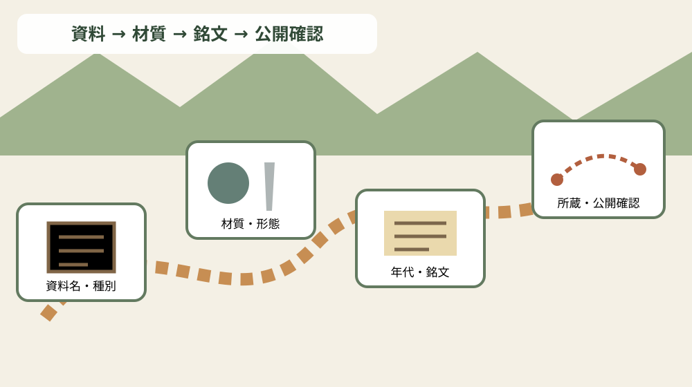

森町の工芸品・書跡・古文書を材質・年代・銘文・所蔵先で引く文化資料索引

この記事の要点
Q. 森町公式に載る鰐口、灯籠、刀剣、経典、古記録を、分野をまたいで調べるにはどうすればよいですか。
A. 「資料名→種別→材質・形態→年代→銘文・作者→所蔵→公開確認」の順で、一件カードを作ります。森町公式「49 森町の工芸品・書跡・古文書」には、青銅製鰐口、刀剣、紙本墨書の経巻や冊子など、形の異なる文化財が並びます。本稿は家庭の古文書仮目録や町史の巻を選ぶ方法ではなく、公式掲載の文化財現物を材質・銘文・所蔵先から横断して引くための索引です。
家庭資料の整理法ではなく、掲載文化財の現物索引
既存の古文書仮目録記事は、家にある封筒や帳面を捨てずに仮番号を付ける調査方法です。町史巻のルーティングも、知りたいテーマから参照先を選ぶ入口です。この記事はそのどちらでもなく、森町公式に掲載された文化財現物だけを横断します。
主語は寺社や旧家ではなく、鰐口一個、太刀一振、経典六百巻、記録一冊という資料単位です。所蔵先が同じでも材質と年代が違えば別行にし、同名資料でも寸法や銘が異なれば別IDを与えます。
もう一つ大切なのは、所蔵先と公開場所を同じにしないことです。森町公式には個人所蔵の資料も載り、公開日時や見学手順は示されていません。索引は存在と属性を確認するもので、訪問案内ではありません。
森町公式は、工芸品では金工品が比較的多く、とりわけ鰐口が多く伝わると説明します。その背景として、森が鋳物師の居住地であったことと、地域の人々による手厚い保護を挙げています。
工芸品は材質・寸法・銘文を分ける
賀茂神社所蔵の鰐口は1個、県指定、面径22.5センチメートル、青銅製です。個別説明では室町時代の1487年、文明19年と記されています。
この鰐口は「周智郡飯田庄藤原通信」が賀茂神社へ奉納したもので、両面を圏線で三区に分け、表側の外区と中区に刻銘を施すと説明されます。資料名だけでなく奉納者、銘文位置、面の区分も検索項目になります。
同じページの概説は賀茂神社の鰐口を1486年、文明18年の奉納と記しており、個別項目の1487年、文明19年と一年違います。索引では片方を削らず、「概説」「個別項目」という記載場所を添えて保留します。
自得院に伝わる鰐口は、概説で1446年、文安3年にさかのぼる最古のものとされ、護福寺毘沙門堂へ奉納されたと説明されます。個別10項目には載らないため、概説由来レコードとして区別します。
行器は1対、江戸後期で、土屋知行所の代官が巡回した際に御飯を入れて用いたと伝えられます。材質と寸法は個別説明にないため、用途伝承を材質の代わりに書きません。所蔵は個人所蔵です。
太刀は1振、県指定、刀長70.0センチメートル、鎌倉時代で、一文字派の作とみられます。長巻直しとされ、金象嵌の一文字は後補ともみられるものの、鞘と刀は健全で華麗な出来と説明されます。
この太刀は森町の個人所蔵です。「一文字派」と「一文字の金象嵌」は別の項目であり、作者推定と後補の可能性を一つの確定銘へまとめません。
短刀は「銘遠州住友安」、1振、県指定、刃長26.4センチメートル、室町時代で、森町の個人所蔵です。銘は資料名の飾りではなく、作者・地域・制作履歴をたどる主要な検索語です。
天宮神社所蔵の釣灯籠は1対、町指定、総高70.0センチメートル、1697年、元禄10年、青銅製です。薄板金製の六角形で、笠、火袋、脚からなり、遠州横須賀城主西尾忠成の奉納と記されます。
概説は、釣灯籠が蓮華寺、天宮神社、山名神社などに伝存し、置灯籠は自得院にあること、いずれも江戸時代の制作と説明します。個別項目の天宮神社一対と、概説の複数所蔵例を混同しません。
大洞院の龍門橋擬宝珠は、山田七郎左衛門種次の作で、形も整う優れた作と概説にあります。寸法と年代が同ページに示されないため、作者名を手掛かりにした追加確認候補です。
| 資料名 | 種別・員数 | 材質・形態 | 年代 | 銘文・作者等 | 所蔵 |
|---|---|---|---|---|---|
| 鰐口 | 工芸・1個 | 青銅、面径22.5cm | 1487年（概説は1486年） | 藤原通信奉納、刻銘 | 賀茂神社 |
| 行器 | 工芸・1対 | 記載なし | 江戸後期 | 代官巡回時の用途伝承 | 個人 |
| 太刀 | 刀剣・1振 | 刀長70.0cm | 鎌倉 | 一文字派推定、金象嵌は後補説 | 個人 |
| 短刀 | 刀剣・1振 | 刃長26.4cm | 室町 | 銘遠州住友安 | 個人 |
| 釣灯籠 | 金工・1対 | 青銅、総高70.0cm | 1697年 | 西尾忠成奉納 | 天宮神社 |
| 大般若経 | 典籍・600巻 | 紙本墨書、巻装 | 南北朝 | 第321巻に写経由来 | 蔵泉寺 |
| 小國神社記録 | 古記録・1冊 | 紙本墨書、冊子装 | 1680年 | 記録 | 小國神社 |
| 世代万ねん | 古文書・1冊 | 紙本墨書、冊子装 | 1832年 | 南鳳寺由来・過去帳 | 個人 |
| 秋葉街道 似多栗毛 | 文学資料・1冊 | 紙本墨書、冊子装 | 江戸後期 | 膝栗毛にならう | 個人 |
| 遠淡海地志 | 地誌・8冊 | 紙本墨書、冊子装 | 1834年 | 山中豊平編集 | 個人 |

書跡・典籍は巻数と装丁を失わない
蔵泉寺の大般若経は600巻、県指定、南北朝時代、紙本墨書、巻装です。一紙の大きさは縦26.5×横47.0センチメートルほどと記されています。
第321巻には写経の由来があり、1384年から1387年にかけて源氏光盛、道圭など7人が勧進檀那となり、牛頭天社宮へ奉納したと概説にあります。六百巻全体の年代と、第321巻に記された出来事を別に保持します。
「600巻」を一点と数えるのか六百点と数えるのかは、検索目的で変わります。親レコードを一件、巻ごとの確認記録を子レコードにすれば、文化財件数と物理的な巻数を混同しません。
巻装は冊子装とは扱いが異なります。形態欄を設けることで、広げたときの寸法、収納単位、撮影順、欠巻確認といった実務へつなげられます。
古記録は内容と物理形態を分ける
小國神社記録は1冊、町指定、縦27.1×横18.8センチメートル、1680年、延宝8年、紙本墨書、冊子装で、小國神社所蔵です。記録名、寸法、年、形態を一行で検索できます。
世代万ねんは1冊、町指定、縦30.0×横107センチメートル、1832年、天保3年、紙本墨書、冊子装です。南鳳寺の由来と過去帳で、森町森の個人所蔵と記されています。
横107センチメートルという記載は冊子装として目を引きますが、開いた寸法か別の測定かをこのページだけで断定しません。単位と原文を残し、必要なら文化振興係へ確認します。
秋葉街道 似多栗毛は1冊、町指定、縦22.3×横15.2センチメートル、江戸後期、紙本墨書、冊子装です。十返舎一九の東海道中膝栗毛にならい、秋葉街道を舞台に書いたものと説明されます。
遠淡海地志は8冊、町指定、縦14.4×横19.5センチメートル、1834年、天保5年、紙本墨書、冊子装です。森本町の山中豊平が編集し、遠江国全体の諸事項を著した地誌で、個人所蔵です。
作品の内容分類は、寺院史、過去帳、文学、地誌のように分けられます。ただし内容分類だけで束ねると物理的な保存情報が消えるため、紙本墨書、巻装、冊子装、員数、寸法を並行して持ちます。
銘文・作者・奉納者を一つの欄に押し込まない
鰐口の刻銘、短刀の作者銘、太刀の金象嵌、灯籠の奉納者、擬宝珠の作者は性質が異なります。索引では銘文原文、銘の位置、作者、奉納者、後補説を別項目にします。
特に賀茂神社鰐口の年代差は、銘文読解か転記の差かをウェブ記事だけで決められません。1486年と1487年の双方を表示し、確認済みの箇所だけを確定欄へ残します。
太刀の「一文字派の作とみられる」は作者推定です。短刀の「銘遠州住友安」と同じ確度で作者欄へ入れず、推定種別と根拠文を付けます。
灯籠の西尾忠成は奉納者であり作者ではありません。大洞院擬宝珠の山田七郎左衛門種次は作者として記されます。人物索引では役割タグを必須にします。
良い点
森町公式「森町文化財保存活用地域計画の認定について」は、令和8年7月17日の答申を受け、文化庁長官により計画が認定されたと案内します。文化財保護法第183条の3に基づく法定計画で、本文も公開されています。
計画本文は令和8年3月時点で指定等文化財を116件とし、美術工芸品では工芸品18、書跡・典籍7、古文書6、歴史資料4と整理しています。773ページの10個別項目とこの件数は同じ集合ではありません。
公式掲載現物の索引に指定件数を結びつけるときは、「ページ掲載」と「指定等文化財」を別フラグにします。個人所蔵だから除外することも、ページ掲載だけで常時公開とみなすことも避けます。
索引の良い点は、材質や銘文から分野をまたいで探せることです。青銅製を検索すれば鰐口と釣灯籠が並び、紙本墨書を検索すれば経巻、神社記録、過去帳、文学、地誌が並びます。
一方、注文したい点は、公開ページだけでは現物の状態、保存箱、公開実績、銘文全文まで分からないことです。空欄を欠陥とせず、次に確認する質問へ変換します。
注文したい点
賀茂神社、天宮神社、蔵泉寺、小國神社という所蔵先は、施設の開館情報ではありません。祭事や法要、保存環境を優先し、事前確認なしに訪ねて閲覧を求めないことが基本です。
個人所蔵と記された行では、所有者名や住所を推測して公開しません。公式ページが示す「森町」「森町森」という範囲にとどめ、問い合わせは社会教育課文化振興係へ相談します。
写真が公式ページに載ることも、複製や二次公開の自由を意味しません。索引には画像URLではなく出典ページを記録し、利用条件が必要なら管理者へ確認します。
現地へ行く場合も、所蔵先の近くに駐車場があるとは限りません。生活道路、境内、個人宅周辺への配慮を優先し、公開確認欄が未確認なら訪問を延期する選択を持ちます。
対案・結論
一件カードは資料ID、資料名、種別、員数から始めます。次に材質、技法、形態、寸法、年代を置き、銘文、作者、奉納者、内容概要を役割別に記します。
所蔵欄には現在所蔵、旧奉納先、旧伝来地を分けます。自得院鰐口の現在所蔵と護福寺毘沙門堂への奉納、聖典の現所蔵と牛頭天社宮への奉納のように、時間の違う場所を一つへ潰しません。
最後に指定区分、典拠URL、ページ内番号、確認日、公開確認を入れます。「公開確認」は公開、非公開、要予約、未確認を勝手に決めず、回答元と回答日を伴う項目です。

家族に残す記録
家に似た資料がある場合でも、公式掲載品と同一だと決めません。全体写真、寸法、材質らしき特徴、銘文の位置、収納箱、入手経緯を記録し、現物へ番号を書き込みません。
実家カルテには、家の住所、土地建物の名義、登記、境界、道路、農地、管理者連絡先を先に残します。文化資料は別紙にし、売却前の残置物整理で誤って処分されないよう保管場所を共有します。
売却を決めていなくても、資料の所在と連絡担当を決める価値があります。価値判断や指定の申出を急がず、家族の合意と専門窓口への相談順序を整えます。
大石の視点
ここからは公的資料ではなく、私、大石浩之の見解です。小さな不動産業者として、古文書や工芸品があるという話だけで不動産価格へ上乗せせず、建物と動産、文化的な情報を別表にするのが安全だと考えます。
現地確認では道路、境界、地目、農地、登記、残置物、維持費を順に見ます。文化資料らしき物は処分対象から一時的に分け、所有者、由来、持出し権限を確認します。
刀剣のように特別な取扱い確認が必要になり得る物は、自己判断で運搬や売却へ進みません。この記事は法的手続の案内ではないため、現物が見つかった場合は所管窓口や専門家へ個別に確認します。
私は、売る前に写真と一覧だけでも家族で共有することを勧めます。今すぐ売らない、家に残す、専門機関へ相談するという複数の選択を保ち、文化資料と暮らしの負担を同時に整理できます。
よくある質問
家にある古文書の調べ方ですか
違います。町公式掲載の文化財現物を横断する索引で、家庭資料の仮目録とは目的を分けています。
所蔵先へ行けば見学できますか
断定できません。個人所蔵を含むため、公開確認を別欄にし、管理者へ事前に確認します。
銘文年は制作年ですか
必ずしも同じではありません。制作、奉納、補刻のどれを示すかを原資料で確かめます。
一対や600巻は一点ですか
作品群の親レコードと個体・巻の子レコードを分け、件数と物理数を混同しません。
まとめ
森町の文化資料索引は、資料名だけでなく種別、材質・形態、年代、銘文・作者、所蔵、公開確認を分けます。青銅、刀剣、紙本墨書を横断でき、年代差や推定も原文のまま保持できます。
今日できることは、773ページの一項目から一件カードを作ることです。所蔵を見学可能へ読み替えず、未確認欄と典拠を残してください。
文化資料を大切にするとは、すべてを公開することではありません。現物の安全、所有者のプライバシー、家族の記録、地域の研究を両立する索引として育てます。
参考にした公式情報
- 49 森町の工芸品・書跡・古文書／静岡県森町（金工品・鰐口の概説、個別10項目の員数、指定、寸法、年代、材質、形態、銘文・作者・奉納者、所蔵先、概説と個別項目の賀茂神社鰐口年代差を2026年8月17日に確認。更新日2019年3月5日）
- 森町文化財保存活用地域計画の認定について／静岡県森町（令和8年7月17日の答申を受けた認定、文化財保護法第183条の3に基づく法定計画、計画本文、工芸品18・書跡典籍7・古文書6・歴史資料4という件数を2026年8月17日に確認。更新日2026年8月6日）

最終確認日：2026-08-17 ／ 本記事は公表情報と執筆者の見解を分けています。所蔵先は公開施設や見学可能を意味しません。賀茂神社鰐口の年代差は独自訂正せず、公式ページ内の表記差として示しました。